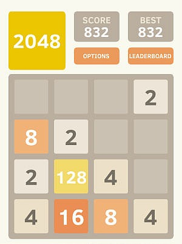

2048
Read about 2048 here.
The image below has most of the characteristics
of a typical go board.

Click here to see the sample gamestate rendered
A Little About 2048
2048 is a tile-based game created by Italian developer Gabriele Cirulli
which gained popularity for its simple controls and challenging objective.
The game starts by rendering a 4x4 grid and filling two random squares with
either a 2 tile or a 4 tile. On each turn the player can choose to move up,
down, left or right. When they make a choice the game grid moves all of the
tiles as far as they can go in the selected direction. When two tiles of
the same magnitude come into contact they merge and create a tile with double
the value. As the name suggests the goal is to create a 2048 tile.
How I will Implement the Algorithm
The algorithm for generating successive 2048 states is fairly
simple, however it does have at least one tricky pitfall. When
the tiles are moved and merged the must prefer to merge into the
index that is furthest in the direction of the merge. For example
if there are three twos in a row and the user chooses left the
middle and the left-most two must merge, not the right most and
the middle. This is important as a common play style involves
playing along the edges and corners of the gameboard.
-
All "white space" (blank spaces) will be removed from the board in the users chosen direction.
-
Each column in the furthest row along the chosen direction will have its values pushed onto a queue.
-
Each value will then be pulled from the queue and attempted to merge with its predecessor.
-
The resulting value (whether a merge takes place or not) will become the next "merge into" value.
-
Values which are not merged will be placed in an array.
-
Once all values have been merged the array will be placed back into the game state and the next row will be done.
*2048 image from https://www.tipandtrick.net/2048-number-puzzle-game-free-download-tips-tricks/